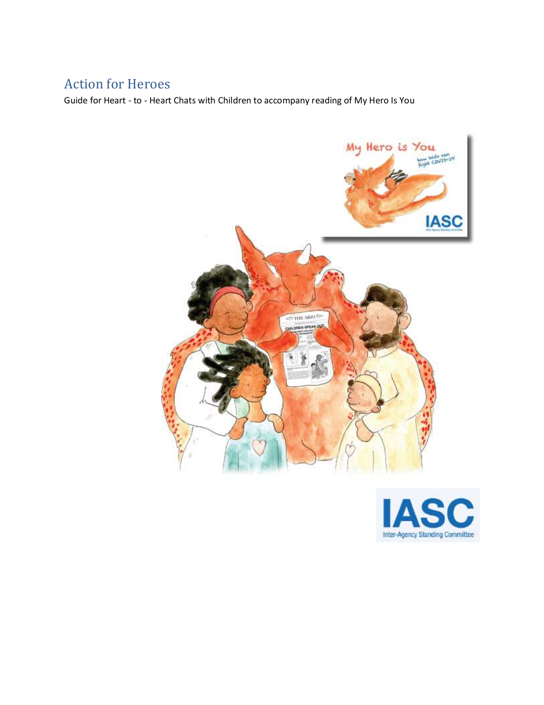

About

- Title
- Action for Heroes
- Author
- IASC
- Date
- 2021-10-07
Accessibility
The publisher's accessibility information for the original EPUB.
Ways of reading
- No information about appearance modifiability is available
- No information about nonvisual reading is available
Conformance
- No information is available
Source EPUB
action-for-heroes; identifier: AUTO-UID-4754997194290171790; converter 1.0.0. Keep the source EPUB for future reconversion. The metadata below describes that EPUB.
- title
- Action for Heroes
- identifier
- AUTO-UID-4754997194290171790
- language
- en-US en-IN
- date
- 2021-10-07
- format
- EPUB3
- creator
- IASC
- publisher
- IASC
- contributor (nrt)
- DAISY Pipeline Narrator
Original EPUB metadata
<metadata xmlns="http://www.idpf.org/2007/opf" xmlns:dc="http://purl.org/dc/elements/1.1/">
<dc:title id="title2">Action for Heroes </dc:title>
<dc:identifier id="pub-id2">AUTO-UID-4754997194290171790</dc:identifier>
<dc:language>en-US en-IN</dc:language>
<meta property="dcterms:modified">2021-10-08T17:06:29Z</meta>
<meta name="dcterms:modified" content="2021-10-08T17:06:29Z"/>
<dc:date id="date2">2021-10-07</dc:date>
<dc:format>EPUB3</dc:format>
<dc:creator>IASC </dc:creator>
<dc:publisher>IASC </dc:publisher>
<dc:contributor id="d557e312">DAISY Pipeline Narrator</dc:contributor>
<meta refines="#d557e312" property="role" scheme="marc:relators">nrt</meta>
<meta xmlns:px="http://www.daisy.org/ns/pipeline/xproc" xmlns:pxi="http://www.daisy.org/ns/pipeline/xproc/internal" xmlns:opf="http://www.idpf.org/2007/opf" property="media:duration">1:14:52.106</meta>
<meta name="media:duration" content="1:14:52.106"/>
<meta xmlns:px="http://www.daisy.org/ns/pipeline/xproc" xmlns:pxi="http://www.daisy.org/ns/pipeline/xproc/internal" xmlns:opf="http://www.idpf.org/2007/opf" property="media:duration" refines="#item_110">1:14:52.106</meta>
</metadata>